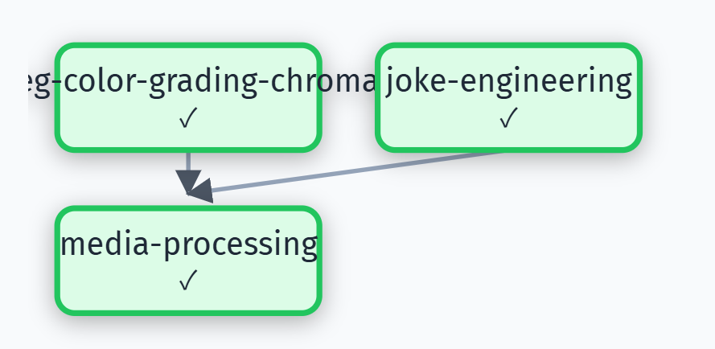

Meme Video
Transform green screen videos into viral short videos with auto-generated subtitles and voiceover
Task
I'm a short-video creator. Generate a cat meme video featuring a boss (Angry Cat) questioning an employee (Sad Cat) about work progress, with witty responses. Use video.mp4 (green-screen footage) and background.jpg. Requirements: remove green-screen, maintain aspect ratio, add 'Boss'/'Employee' labels, sync subtitles with meowing, and create humorous dialogue with viral potential.
Results

Complete meme video featuring the 'Boss Cat vs Employee Cat' dialogue. The green screen has been automatically removed and replaced with the custom office background. Character labels ('Boss'/'Employee') are positioned above each cat. Subtitles are synchronized with the cat's meowing sounds, displaying witty workplace humor dialogue about deadlines and project progress. Ready for direct posting to short-video platforms like TikTok or Douyin.

Alternative version with different visual styling and dialogue variation. Demonstrates the system's ability to generate multiple creative outputs from the same source material. Features different subtitle styling, adjusted timing for comedic effect, and an alternative punchline that offers a fresh take on the workplace humor theme. Both videos maintain the original aspect ratio and video quality.
Skill Workflow (DAG)

Skills automatically selected and orchestrated by AgentSkillOS